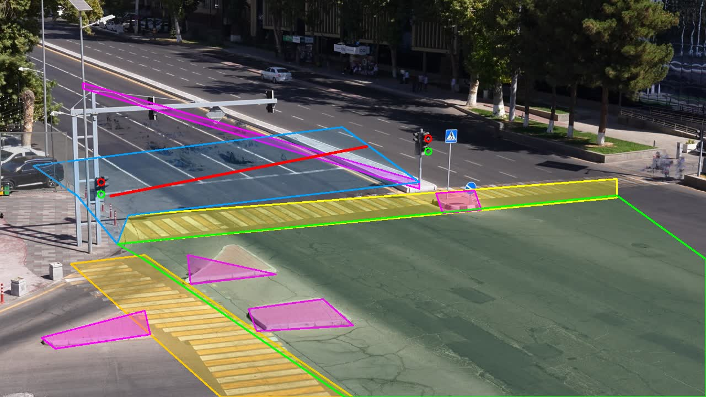
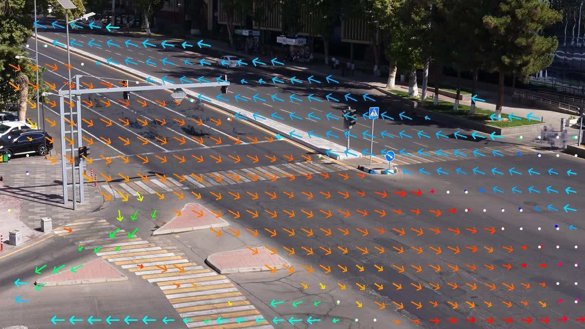
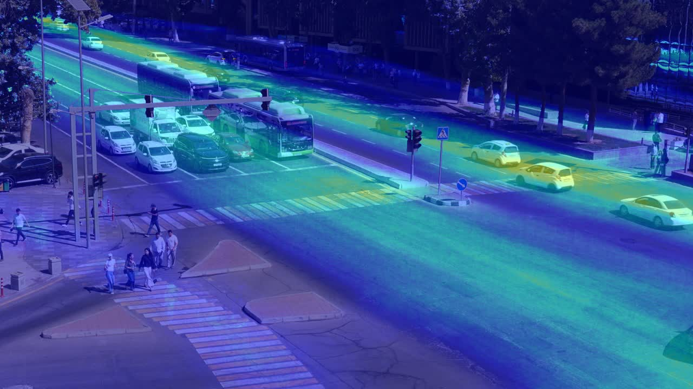
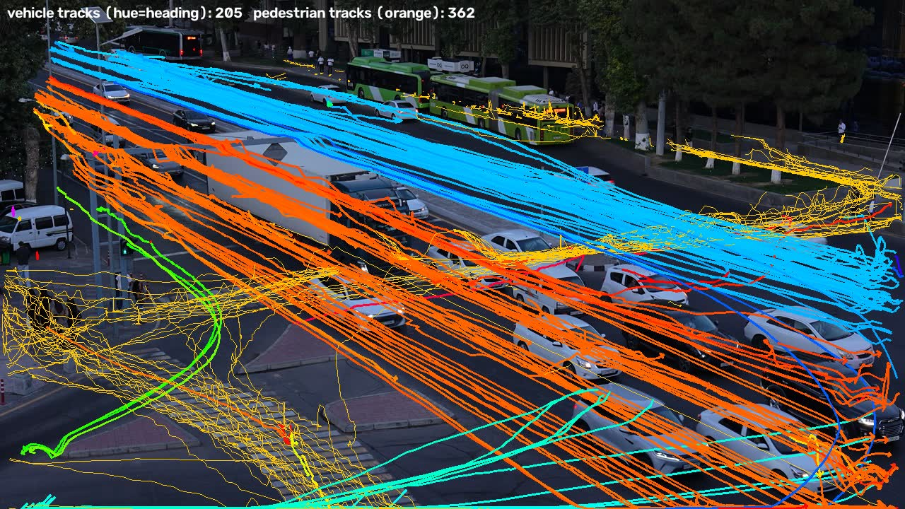
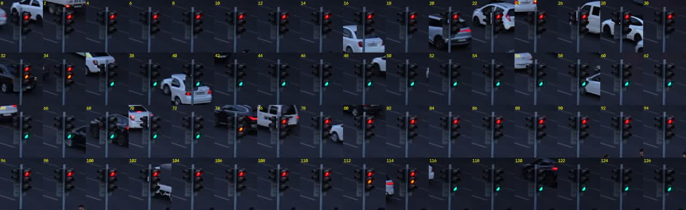
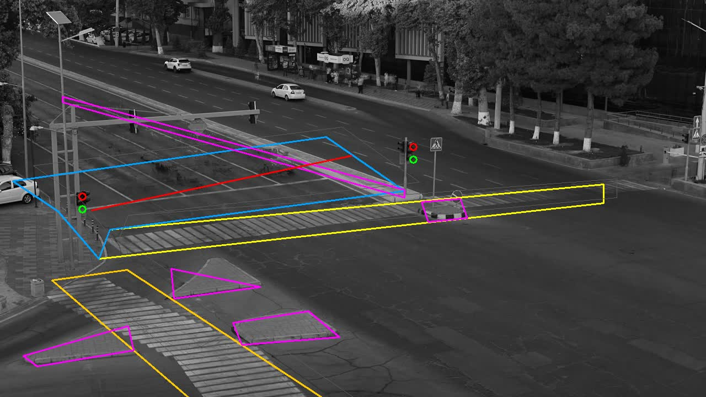
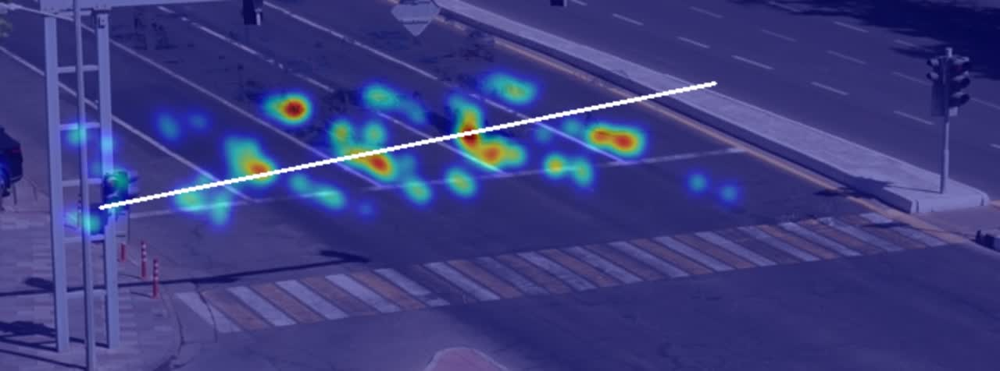

Traffic events from a fixed road camera, as time segments
A YOLO11 detector and ByteTrack tracker turn the footage into trajectories. A hand-drawn scene layout, re-aligned per video, and a pixel-level traffic-signal reader turn those trajectories into eight classes of traffic events with start and end times. Everything runs offline at 0.64× real time on a laptop GPU.
Try the live demo Repository predictions_samples.jsonTeam
Majidov Jahongir captain
Pipeline integration, labelling of the sample videos, evaluation runs, submission packaging.
github.com/Winner-121Amir Kuldashev
Detection and tracking, scene layout and per-video alignment, rule engine, repository and reproducibility.
github.com/amir-kuldashevKamillov Muzaffarali
Labelling and candidate review, exploratory analysis, website and live demo.
github.com/kamilovmuzaffaraliContributions were shared evenly. Every member labelled sample videos with our own labelling tool and reviewed the detector's candidate events.
Problem and approach
Given one .mp4 from a fixed CCTV camera over a signalised intersection in Tashkent, return every traffic event as [start_sec, end_sec, label]. Events are matched to the organizers' annotations by temporal IoU at 0.3, 0.5 and 0.7, so boundaries matter as much as detection. No labels are provided; we labelled the four sample videos ourselves.
Pipeline
Blue = learned components, green = hand-written rules. Nothing is trained on the sample videos; only the layout polygons and a traffic-flow field were derived from them.


wrong_way and to require that a vehicle crosses a zebra with the flow rather than driving along it.What each class means to the detector
| class | rule |
|---|---|
| red_light | Came down the near carriageway with the flow for ≥ 2 s, crosses the stop line while moving, signal red ≥ 6 s before and ≥ 3 s after (the near-pole head has no amber phase and goes red 6 s early; a whole queue starting 1–2 s before green is not a run), clears the zebra within 4 s. |
| stop_line | Stationary with the front 8–60 px past the stop bar while red, ≥ 3 s. Ends when the signal turns green. |
| stopped_vehicle | Stationary ≥ 10 s inside the intersection or ≥ 60 s elsewhere; signal queues excluded (upstream of the stop line while not green, or within 20 s of green); re-identified parked vehicles joined across track ids. |
| jaywalking | Pedestrian ≥ 14 px inside the carriageway, off any crossing / island / parked zone, walking ≥ 40 px, ≥ 2 s. People inside a vehicle box (riders, passengers) ignored. |
| failure_to_yield | Vehicle crossing the main zebra (with the flow, not along it) while a walking pedestrian is ahead of its front and inside, or about to enter, its lane corridor. This is the team's reading: the car moves before the pedestrian has cleared its path. |
| wrong_way | Heading opposite the learned flow (cos < −0.9) in a coherent cell for ≥ 2 s, outside the intersection box. |
| solid_line_crossing | Ground point drifts monotonically from one side of a solid lane divider to the other; segment from the start of the drift to 1.5 s after settling in the new lane. Dividers found by a Hough transform on the reference background. |
| congestion | ≥ 4 distinct vehicles stationary inside the intersection box at once for ≥ 5 s, extended while ≥ 2 remain (queue stops moving … queue clears). |
Tried and dropped after review against our labels: illegal_turn (island-mounting footprint test, 0 of 11 confirmed), illegal_u_turn (heading-reversal test fires on tracker noise). Not attempted: accident, near_miss, road_obstacle, fire_smoke. Part B (accident anticipation) is left as the default estimator.
EDA of the sample videos
| video | duration | resolution / fps | mean brightness | unique tracks | lighting |
|---|
Brightness over time
Road users present, per class





stop_line distance thresholds.Findings that shaped the solution
- Signal state is readable from pixels → three classes (red_light, stop_line, queue exclusion for stopped_vehicle) become rules instead of models.
- Amber-running is common at this intersection (cars cross 2–5 s into red); genuine red-light runs are rare (1 in 18 min).
- The far-kerb lane at the bus stop is used for parking for minutes at a time; the team decided these are not
stopped_vehicleevents. - Decoding 4K at 140 Mbit/s costs ~0.25× real time on its own; the harness decodes every frame for Part B regardless, so Part A samples every 3rd frame.
- Solid-line crossings while joining the queue on red are frequent (16 labelled in 18 min) and were not in our first class list.
Results on the sample videos
Every sample video annotated with our tooling: tracked boxes, active events, and a timeline bar. Click an event in the timeline or the list to jump the video to it. Blue rows are our detections, the thinner grey rows underneath are the team's labels.
Events
Per-class score against our labels
Official evaluate.py, 4 videos, 4K originals, 100 predicted events vs 102 team labels (same-class overlapping labels merged, as the organizers do for simultaneous events). Label boundaries are approximate, which mostly shows at tIoU 0.7.
| class | labels | TP / FP / FN @0.5 | F1@0.3 | F1@0.5 | F1@0.7 |
|---|---|---|---|---|---|
| red_light | 1 | 1 / 0 / 0 | 1.00 | 1.00 | 1.00 |
| stopped_vehicle | 6 | 5 / 1 / 1 | 0.83 | 0.83 | 0.67 |
| stop_line | 4 | 4 / 3 / 0 | 0.73 | 0.73 | 0.73 |
| congestion | 2 | 1 / 1 / 1 | 1.00 | 0.50 | 0.00 |
| jaywalking | 33 | 14 / 24 / 19 | 0.56 | 0.39 | 0.37 |
| solid_line_crossing | 22 | 8 / 6 / 14 | 0.50 | 0.44 | 0.28 |
| failure_to_yield | 11 | 1 / 31 / 10 | 0.05 | 0.05 | 0.05 |
| wrong_way, illegal_turn, illegal_u_turn | 1 each | 0 / 0 / 1 | 0 | 0 | 0 |
| Score A (macro, 10 classes) | 0.39 | ||||
Honest failure cases
Our labellers rejected 48 detector candidates under two different rule versions and confirmed events whose nearest pedestrian ranged from 16 to 500 px away. The class is not consistently labelled, by us or (we suspect) by anyone, and our score on it is near zero.
Jaywalking and solid-line segments are detected but start ~1 s early or end ~1 s late relative to the labels. At tIoU 0.7 that halves the F1. The labels themselves are approximate.
A car passing beside a traffic island and a car mounting it look the same in 2D from this angle. Our illegal_turn rule fired 11 times, all rejected, and was dropped.
The far-pole head washes out in direct sun; only the near-pole head is reliable by day. Both are needed for dusk. A test video with a different exposure could break the adaptive thresholds.
ByteTrack loses a parked vehicle behind a passing bus and returns it with a new id. We join stationary segments by position, which fixed most long stops but can merge two different vehicles parked in the same spot.
accident, near_miss, road_obstacle, fire_smoke, illegal_turn, illegal_u_turn. Each one present in the hidden set is a zero in the macro average.
Operator dashboard
Events per class, all sample videos
Events per minute of footage
Ablations
| variant | effect (dev labels) | runtime |
|---|---|---|
| Frame stride 3 → proxies at 720p instead of 4K originals | Score A 0.43 vs 0.39: near-threshold detections differ, shifting some jaywalking / solid-line boundaries | 0.21× vs 0.64× |
| FP16 → FP32 inference | Same events, boundaries move 0.1–2 s on 4 jaywalking segments | 0.54× vs 0.38× (Part A only) |
| Signal from near-pole head only (no amber offset) | red_light: 9 detections, 8 false. With the 6 s offset: 1 detection, 1 true | — |
| No per-video alignment | Stop line lands 20–40 px off on 2 of 4 clips; stop_line and red_light rules fail on them | −2 s / video |
| Literal failure_to_yield (any pedestrian on the zebra) | 40 detections, 35 rejected by the team → team definition adopted | — |
| Newer torch / ultralytics on a clean machine | 1 of 17 short events dropped on the test clip; versions pinned | — |
Live demo
Upload an .mp4 from the same camera (up to 2 minutes, ≤ 200 MB). The demo runs the full pipeline on CPU with a lighter detector setting (stride 5, 960 px) so a 2-minute clip finishes in a few minutes; a progress bar shows the stage. It returns the event list, a timeline and an annotated preview.
The demo is hosted on Hugging Face Spaces: open the demo in a new tab.
Report
What we built
A detector-tracker-rules system. The only learned parts are a COCO-pretrained YOLO11m and ByteTrack; everything specific to this camera is a 1280×720 layout drawn once on a clean background and re-aligned per video with a homography, a traffic-flow field learned from the sample trajectories, and a pixel reader for the two visible signal heads. Eight classes are produced by per-class predicates on trajectories, followed by segment post-processing (gap filling ≤ 1 s, blip removal, same-class union). The whole thing runs in 0.64× real time on an RTX 5060 laptop GPU including the harness's own full-frame decode for Part B, against a 3× budget.
What worked
- Reading the traffic signal from lamp pixels. It is robust in daylight and dusk once the green lamp is scored as cyan and both heads are combined, and it converts three classes into simple rules.
- Per-video alignment. The camera moves a little between recordings; a SIFT homography from the median background fixes the layout in seconds and will matter on the hidden videos too.
- Building our own labelling tool with a candidate-review loop. The team labelled 18 minutes of 4K footage, then confirmed or rejected every detector event with one click. Rejections were as useful as labels: they found the amber-phase bug in red_light and killed the illegal_turn rule.
- Stationary-vehicle logic: signal-aware queue exclusion, a 10 s threshold inside the intersection versus 60 s elsewhere, and spatial joining of re-identified tracks give 0.83 F1 on stopped_vehicle.
What did not
- failure_to_yield. The organizers' definition is literal (a vehicle through the crossing while a pedestrian is on it) and fires 40 times in 18 minutes here; our labellers rejected most of those and could not agree on a stricter reading. We shipped the team's reading and expect a low score on this class either way.
- Boundary precision. Our segments are systematically ~1 s longer than the labels for jaywalking and lane changes. Half the gap between F1@0.3 and F1@0.7 is boundary style, not detection.
- Island-mounting and U-turn rules. Both produce only false alarms from this viewpoint and were dropped.
- We did not attempt accident / near-miss detection or Part B. With no such events in the samples we had no way to validate a rule or a classifier, and chose to spend the time on classes we could measure.
What we would do next
- Train a small clip classifier for accident / near_miss on public crash datasets (DoTA, CCD) and gate it with a time-to-collision score from the tracks; reuse the same TTC as the Part B risk curve.
- Calibrate boundaries per class against a larger, cleaner label set, with two annotators and a consensus step.
- Fine-tune the detector on a few hundred frames from this camera, mainly for pedestrians at dusk and riders on scooters.
- Replace the hand-drawn layout with lane polygons fitted automatically from the flow field, so a new camera needs no manual work.
Links
- Repository: github.com/Winner-121/Destroyerrrrs
- Weights: YOLO11m (COCO, AGPL-3.0) fetched by weights/download.sh
- Predictions on the samples: predictions_samples.json
- Team labels: labels/my_labels.json
- Live demo: Hugging Face Space